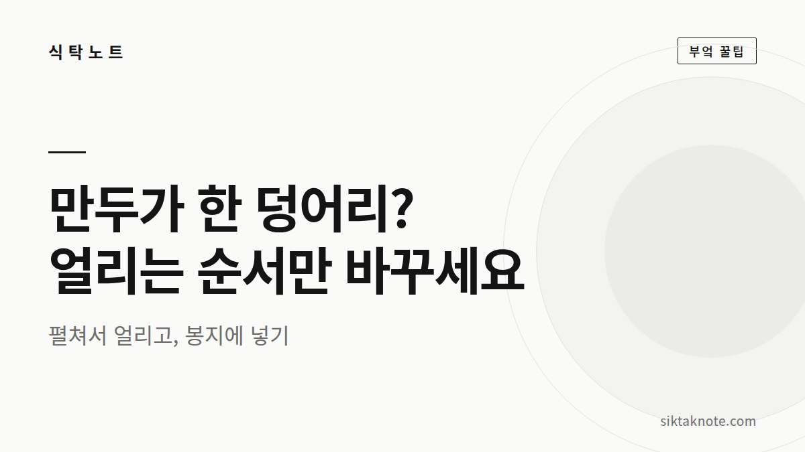
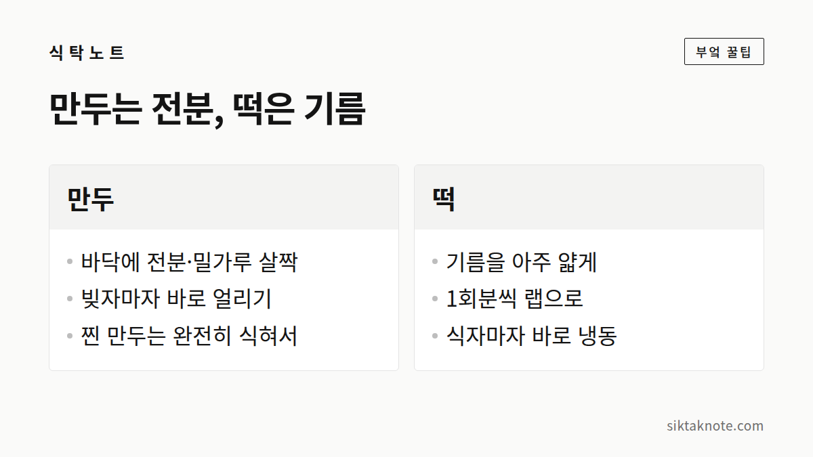

냉동실에서 만두·떡이 한 덩어리로 붙어요 — 낱개로 얼리는 법

3줄 요약
- 쟁반에 간격을 두고 펼쳐 1~2시간 먼저 얼리고, 그다음에 지퍼백에 모아 주세요.
- 만두는 바닥에 전분을 살짝 묻히고, 떡은 기름을 아주 얇게 바르면 덜 붙어요.
- 이미 붙었다면 억지로 떼지 말고 덩어리째 찌면 저절로 떨어져요.

냉동실 안에서 왜 서로 붙을까
냉동실 문을 열었더니 만두가 한 덩어리로 얼어붙어 있을 때, 정말 난감하죠. 하나만 꺼내려는데 떨어지지 않아 낑낑대게 되고요.
만두와 떡 표면에는 수분이 있어요. 봉지에 바로 담아 얼리면 서로 닿은 면의 수분이 얼면서 접착제처럼 이어 붙어 버려요. 그러니 핵심은 닿기 전에 표면부터 얼려 두는 거예요.

펼쳐서 먼저 얼리는 게 기본이에요
- 쟁반이나 넓은 접시에 종이호일을 깔아요.
- 만두나 떡을 서로 닿지 않게 간격을 두고 올려요.
- 그대로 냉동실에 1~2시간 넣어 겉을 단단하게 얼려요.
- 다 얼면 지퍼백에 옮겨 담고, 공기를 최대한 빼서 밀봉해요.
- 봉투에 날짜와 내용물을 적어 둬요.
이렇게 해 두면 봉지 안에서 한 알씩 데구루루 굴러서, 필요한 만큼만 꺼내 쓸 수 있어요.

만두는 바닥에 전분을 살짝
쟁반 바닥에 전분이나 밀가루를 살짝 뿌려 두면 쟁반에 들러붙는 것도, 만두끼리 붙는 것도 줄어들어요. 손만두는 빚자마자 바로 얼려야 해요. 실온에 오래 두면 속의 수분이 피로 배어 나와서 더 잘 붙고 잘 터지거든요. 찐 만두를 얼릴 땐 완전히 식힌 다음에 넣어야 하고요. 따뜻할 때 넣으면 김이 서려 성에가 생겨요.
떡은 기름을 아주 얇게
가래떡이나 떡볶이떡은 식용유나 참기름을 손에 묻혀 살짝 발라 두면 서로 붙지 않아요. 인절미, 송편, 감자떡처럼 낱개로 된 떡은 1회분씩 랩으로 싸서 얼리는 방법도 좋아요. 갓 만든 떡은 식자마자 바로 냉동해야 가장 말랑한 상태로 보관돼요.

이미 붙어 버렸다면
가장 확실한 건 덩어리째 찜기에 올리는 거예요. 열을 받으면서 저절로 떨어져요. 찔 여유가 없다면 실온에 3~5분 두었다가, 겉만 살짝 녹았을 때 천천히 비틀어 떼요. 너무 오래 두면 피가 찢어지니 조심하고요.
칼은 쓰지 않는 게 좋아요. 언 덩어리에 칼을 대면 미끄러져서 다치기 쉬워요.
냉동실에서 얼마나 버틸까
가정용 냉동실은 문을 자주 여닫아서 온도가 오르내려요. 맛과 식감을 생각하면 한두 달 안에 먹는 게 좋아요. 표면에 하얀 성에가 두껍게 끼고 말라 보인다면 맛이 떨어졌다는 신호고요.
바꿀 건 순서 하나뿐이에요. 봉지에 넣고 얼리는 대신, 펼쳐서 얼린 뒤에 봉지에 넣는 거예요. 그것만으로도 냉동실 만두와 떡이 훨씬 다루기 편해져요.